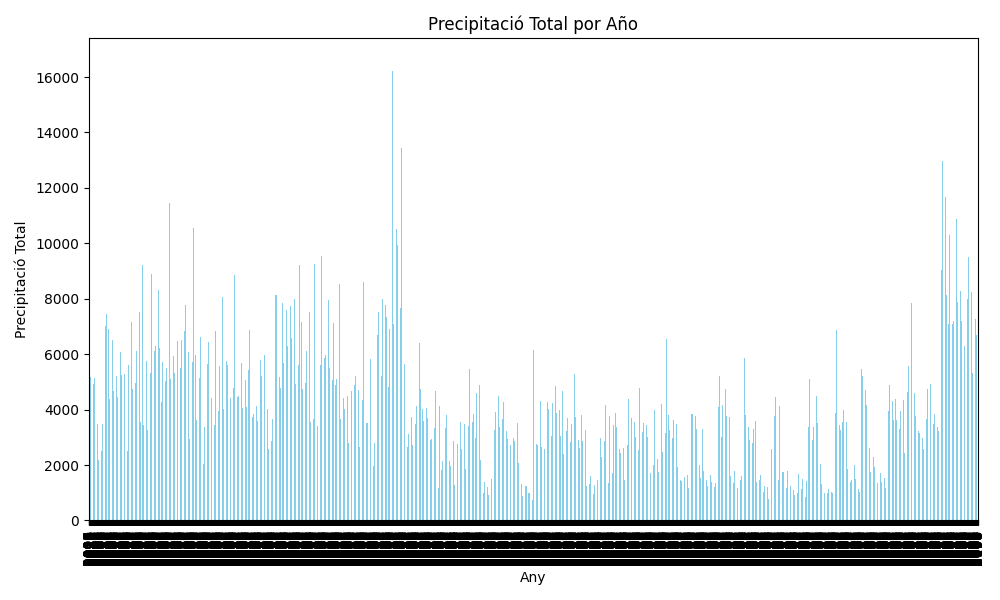
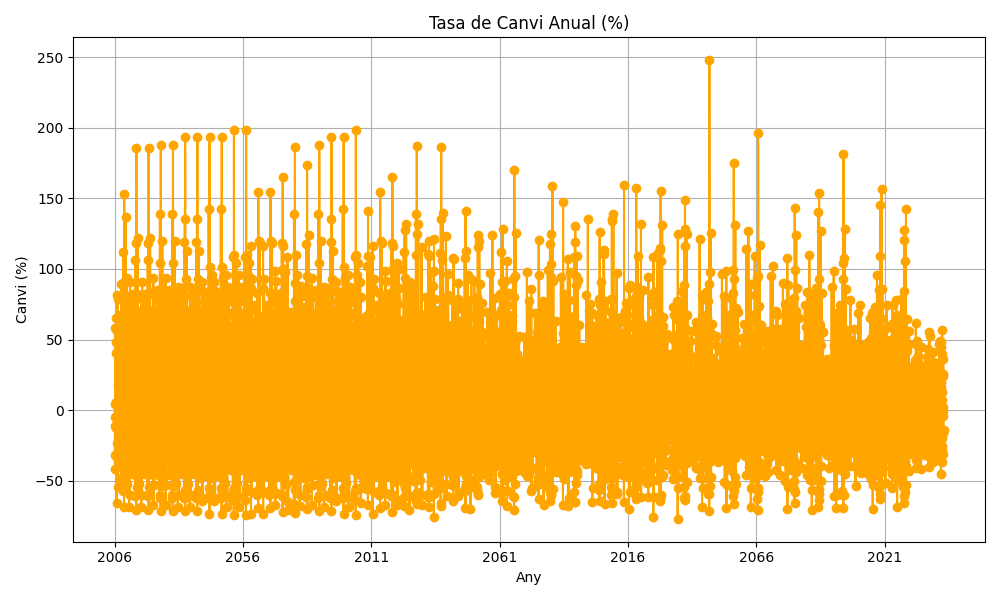

Sobre el Projecte
Aquest projecte té com a objectiu mostrar resums estadístics relacionats amb la precipitació anual. Els usuaris poden interactuar amb gràfics dinàmics per observar les tendències de pluja al llarg del temps i descarregar les dades completes en format CSV per a un anàlisi més detallat.
Coneix el Nostre Equip
Un grup d'estudiants apassionats de l'ASIX a l'ITB amb l'objectiu de crear solucions innovadores per l'anàlisi de les dades meteorològiques.

Jiajun Ye

Alberto Trujillo

Steven Zapata

Didac Escoda
Gràfics Interactius
Explora els gràfics sobre precipitació total i la seva variació anual a continuació.

Precipitació Total

Variació Anual
Descàrrega de Dades
Accedeix a les dades completes en format CSV per al seu anàlisi i consulta detallada.